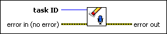

Sound Input Clear VI
Owning Palette: Sound Input VIs
Requires: Base Development System
Stops acquisition of data, clears the buffer, returns the task to the default state, and clears the resources associated with the task. The task becomes invalid.
(Windows) You must have DirectX 8.0 or later to use this VI. (Linux) You must have the Open Sound System (OSS) driver to use this VI.

 Add to the block diagram Add to the block diagram |
 Find on the palette Find on the palette |